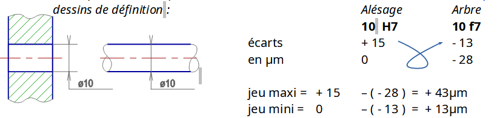

Rôle des ajustements
Ajuster 2 pièces, c'est emboîter parfaitement ces 2 pièces avec du jeu (liaison) ou du serrage (assemblage) suivant le fonctionnement désiré.
Ajustements normalisés- système ISO.
C'est par économie que l'on a créé ces ajustements (moins d’outillage de contrôle). Les tolérances sont indiquées par des symboles.
Désignations:

Positions des tolérances avec alésage normal (H):

Qualités des tolérances:
5 et 6 : mécanique de précision
7 et 8 : mécanique courante
9 à 13 : mécanique grossière
Calculs du jeu
JeuMaxi = ØMaxi ALESAGE – Ømini arbre
Jeumini = Ømini ALESAGE – ØMaxi arbre
Calculs du jeu (méthode des écarts)
Cette méthode permet de ne pas avoir à convertir les micromètres en millimètres. (1µm = 0,001 mm)

Types d’ajustements
| Avec jeu | incertain | serrée | |
| Jeu Maxi | + | + | -0 |
| Jeu mini | +0 | - | - |